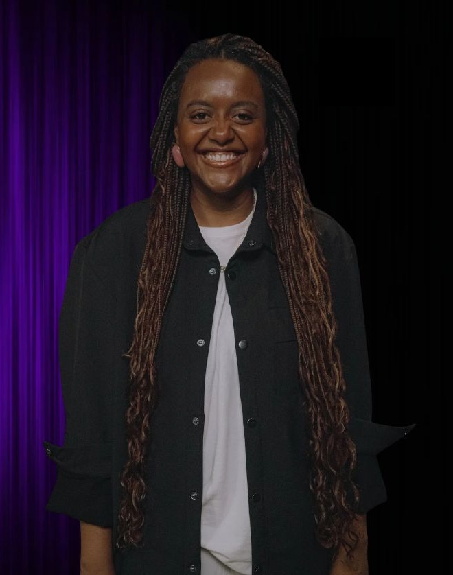

O que é adoração
Adoração é um estilo de música? É música lenta?
Entenda o que a Bíblia diz sobre o que ela é, e por que esse entendimento muda a forma como você vive, serve e ministra no louvor.

Uma noite para olhar o que a Palavra ensina sobre adoração, louvor e música, e como isso transforma a forma de viver, servir e ministrar.
Terça, 24/11 · 20h às 22h · ao vivo

No dia 24/11 vamos olhar para o que a Palavra ensina sobre adoração, louvor e música, e como isso transforma a nossa forma de viver, servir, conduzir e ministrar.
Uma aula para equipes de louvor e líderes de adoração que desejam se equipar e subir de nível, fazendo parte da geração que honra a Deus com excelência, sem separar a técnica da unção.
O Senhor não merece nada pela metade. Ele é digno de tudo, por inteiro.
Duas horas ao vivo, com a Bíblia aberta, para entender o que você faz no altar e por quê.
Adoração é um estilo de música? É música lenta?
Entenda o que a Bíblia diz sobre o que ela é, e por que esse entendimento muda a forma como você vive, serve e ministra no louvor.
Louvor é música rápida, pra agitar a igreja?
Descubra o que é louvor de verdade, qual é a diferença entre louvor e adoração e por que confundir os dois enfraquece a sua entrega e ministração.
Como o povo de Deus se expressa diante dele
O que a Palavra mostra sobre cada expressão, e como colocar e ensinar cada uma em prática no seu ministério, na sua equipe e na sua igreja.
Sua voz, seu instrumento, seu talento
Eles são um meio para revelar a beleza de Cristo. Aprenda a usar as ferramentas sem deixar que a arte ocupe o lugar de quem ela deveria apontar.
para começarmos, ao vivo.
Duas horas ao vivo com a Babi, sobre o que a Palavra ensina a respeito de louvor e adoração.
Valores e parcelamento no checkout seguro da Hotmart
“Excelência em cada palavra e em cada ensinamento.”
Bárbara Canuto é cantora, líder de adoração há 21 anos e Vocal Coach há 9. Ativa vozes no Brasil e no mundo, com formação em Anatomofisiologia Vocal pelo CEV (SP) e em Ciência e Pedagogia Vocal.
Já atendeu pessoas no Brasil, na Bolívia, em Portugal, na França e nos EUA, formando cantores e equipes que escutam a própria voz e sabem decidir o que fazer com ela, sem separar a técnica da unção.
Se participar e sentir que não era para você, peça o reembolso pela própria Hotmart em até 7 dias após a compra. Sem perguntas.
Online e ao vivo, pelo Google Meet, na terça-feira, 24/11, das 20h às 22h (horário de Brasília).
Logo após a compra a Hotmart envia a confirmação para o seu e-mail, com as orientações para participar da aula ao vivo.
Não. A aula acontece só ao vivo e não terá replay. Reserve a sua terça, 24/11, das 20h às 22h.
Sim. Quem participar recebe certificado de participação.
Não. A aula é para quem lidera, ministra, canta ou toca numa equipe de louvor, e para quem forma novas gerações no ministério, em qualquer nível.
Sim. O pagamento é feito na Hotmart, que aceita Pix e cartão de crédito.
Você tem 7 dias de garantia. É só pedir o reembolso pela Hotmart.
Terça, 24/11, às 20h. Uma noite para alinhar o seu louvor com o que a Palavra ensina.
Quero garantir minha vaga